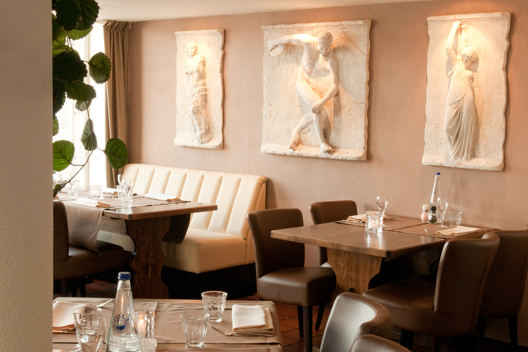
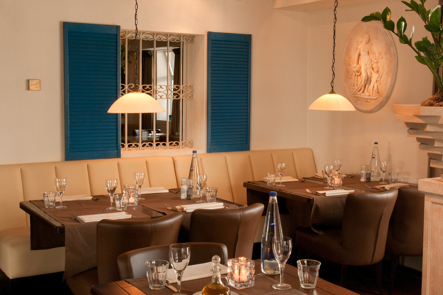
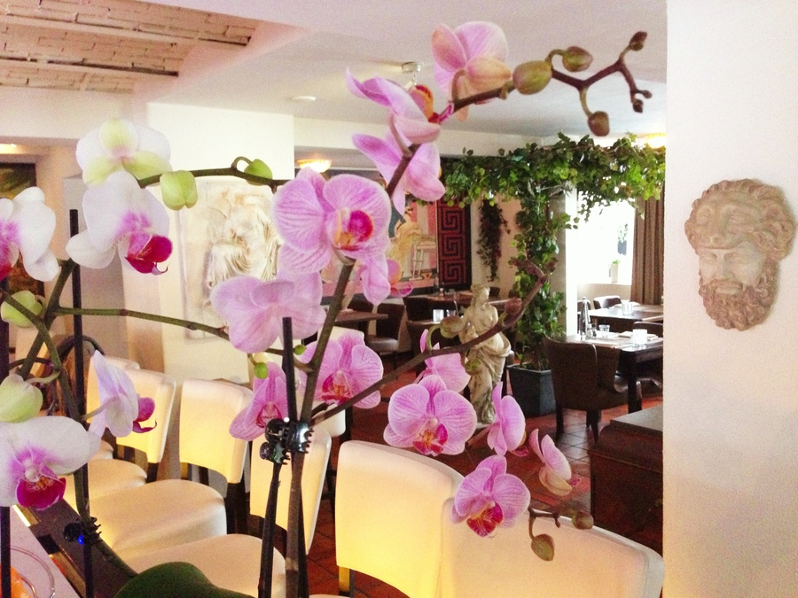
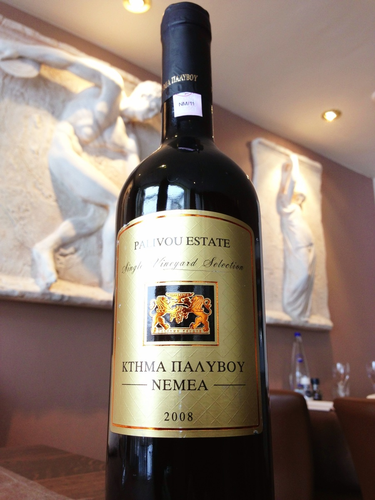
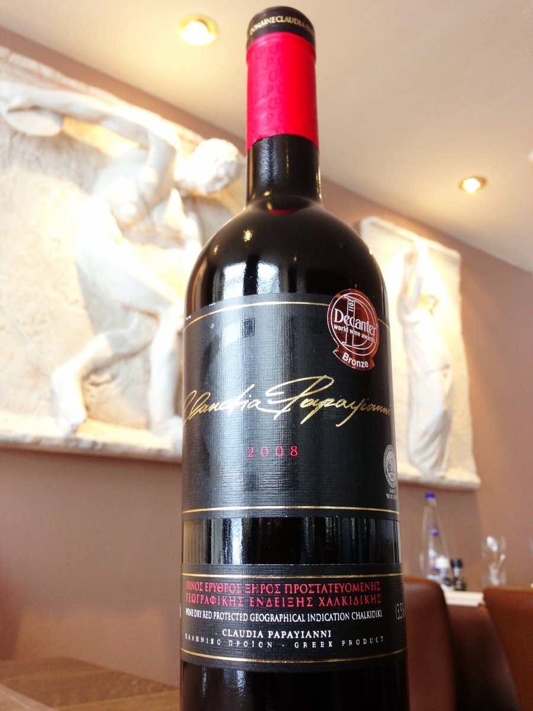
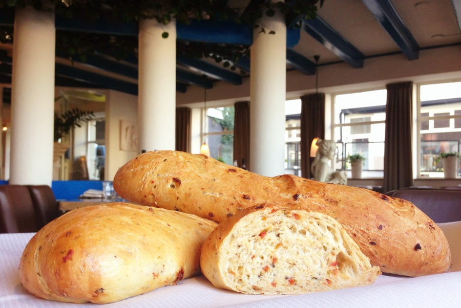
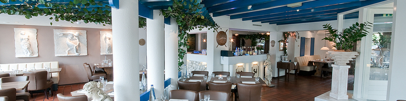

Gezelschappen en catering
Iets te vieren met familie of collega's, of een uitgebreide catering nodig? Bel ons gerust, dan bespreken we de mogelijkheden.
Bel 055 522 2323
Grieks familierestaurant sinds 1984
Proef het echte Griekenland, midden in Apeldoorn: onder het oude raadhuis aan het Raadhuisplein.
Ontdek de Griekse sfeer en proef de wereldberoemde gerechten van de Griekse keuken. Of u nu een gezellig diner met z'n tweetjes wilt, een snelle hap of een uitgebreide catering: belt u ons gerust voor alle mogelijkheden.




Bezorgen en afhalen kan van dinsdag t/m zondag, 17:00 tot 21:00. Op onze bestelsite ziet u het bezorgmenu en plaatst u direct uw bestelling. Liever bellen? Geef het door via 055 522 2323.
Het bezorgmenu heeft eigen prijzen; die vindt u op de bestelsite.

We hebben met ons drieën heerlijk gegeten in een heel gezellige ambiance. De bediening was uiterst vriendelijk en luisterde goed naar onze wensen. Kortom een perfecte eetgelegenheid.

Iets te vieren met familie of collega's, of een uitgebreide catering nodig? Bel ons gerust, dan bespreken we de mogelijkheden.
Bel 055 522 2323Ben je 16 jaar of ouder en zoek je een baantje in de horeca? Wij zoeken medewerkers voor de bediening en de afwas. Loop gerust even binnen of bel ons.
Mail onsWilt u zeker zijn van een tafel? Reserveer telefonisch of stuur ons een bericht.
Raadhuisplein 8a
7311 LK Apeldoorn
Parkeren onder de markt, meer dan 600 plaatsen.
| Dinsdag t/m zondag | vanaf 17:00 |
|---|---|
| Keuken | 17:00 – 21:00 |
| Bezorgen en afhalen | di t/m zo, 17:00 – 21:00 |
Op maandag of een feestdag? Bel ons even voor de actuele tijden.